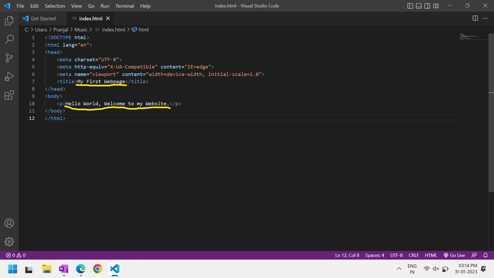

Blogs
In software development process, there's always a dilemma for both developers and clients between choosing
technologies, tools, frameworks or platforms from endless numbers of providers available in the market today.
Among these, the most common concern we have before creating a website is to choose between Website Builder and
Website Coding.
In this blog post, I'll explain everything in detail and simple manner so that it become very easy for you to choose
the one that exactly matches your needs. But before knowing which website building approach is better for you,
let's first know what does these terms actually mean.
-
Website Coding- In this approach, a website is created using manual coding by a professional Web Developer. Here, a developer spends much time on understanding the ideas, design and functionalities from the client and then creates a custom website that helps to achieve great business value for its client.
→ Pros
All the major software companies such as Google, Amazon, YouTube have built their websites using this approach.-
Customization: The major advantage of using manual coding is its customization capability. There's endless possibility to personalized the webpages that creates an unmatch brand for your company.
Imagine the Google home page, by looking at anywhere within the page we can identify its brand. -
Functionalities: The next important factor is integrating different functions to the website. With manual coding we can integrate any tools such as powerful sales and marketing tools.
-
Performances: We can optimize the website using various techniques to run smoothly in all types of devices and platforms.
Nowadays, every website builder companies working relentlessly to improve its performances; however it's still behind the manual coding. -
Scalability: Another factor is ability to scale-up the website using different platforms. We can host our website to any server such as shared, dedicated or cloud as we wish.
-
Cost: Website build through coding by a Web Developer or a software house cost relatively higher as compared to using website builder since it takes more time and experience to build a great website.
-
Time: Another important factor to consider is time, it may takes few weeks to months to build a professional full-fledged website.
-
Usability: Coding as we all know is a tough job, so it's important for a client to hire a well-experience developer to create their website as there're multiple dimensions one need to consider while creating a website.
-
Support: It is difficult for any new developer you hire to update features or make any corrections on a website created by other developer as everyone follows different approach and style of development.
-
-
Website Builder- It is basically a content management tool that allows us to create a website without writing or editing the underlying code. It provides all the basic requirements to run the website in a single place such as getting a domain name, hosting webpages and add essential security features like a SSL.
→ Pros
There're number of website builders you can see in the market today and almost all of them provide both free and premium plan of their products. I have listed few of them below:
WordPress, Wix, Shopify, Weebly, SquareSpace, Google Sites, etc.
Some of the established websites created using website builder are: Goodfair, Mane Ethical, Quartz India.-
Cost: It is the primary factor on choosing website builder over manual coding. It cost significantly less to create a website using builder as you just have to pay the subscription plan on yearly basis and then either create the website yourself or else hire a Freelancer with a very nominal fees.
-
Time: It is another great advantage, we can create webpages within a couple of hours or days based on the complexity of the website.
-
Usability: It is a very easy to use tool having drag-and-drop interface, anyone can modify the webpages with the required admin access.
-
Support: You'll get better technical support and documentation from the website builder companies to manage your website with ease.
-
Customization: We cannot completely customize the design, designs are based on standard layout and may resemble to other websites made using same builder.
-
Functionalities: It have limited capabilities, we cannot add some specific functions to the website.
-
SEO: Websites created using builder have poor SEO (Search Engine Optimization), we're unable to fully optimize our website for search engines.
-
Security: Since websites use shared resources of a builder, it has potential security vulnerabilities and more likely to hacks.
-
I hope the above explanation now make you understand better about the difference between the two approach of
Web Development. The below comparison table will help to clarify further on the different factors that have been
discussed above.

If you're a buiness owner and wanted to grow your business online by creating a website but still unable to make a decision on which approach to choose between the two. You can follow the four criteria mentioned below and note down your own answers for each of them and I believe by doing this you'll get the desired answer.
-
Business Needs: Is your website will provide some source of information or just sell simple products/services?
If yes, go for website builder.
If no i.e. your website might rely on external software integrations to perform critical functions then choose manual coding. -
Branding: Are you more concerned about the personalized design and unique look for your website?
If yes, choose manual coding.
If no then website builder is perfect for you. -
Time Requirement: Do you want to create and launch your website within few days or a week?
If yes, website builder will work better in this case.
If no i.e. you have time to complete it within few weeks or months then manual coding can be an option for you. -
Budget: Are you an owner of a small business or just started your business?
If yes, it is recommended to opt for website builder.
If no i.e. your business have grown-up to mid-level or large-level company then you may spent on websites build with professional developers.
Conclusion- In this blog post, I have explained the differences between Website Builder and Website Coding and various factors involved in each approach. Finally, I have provided the criteria that will help you to choose which Web Development appproach suits best for your business needs.
This tutorial will teach you all the steps required to create and launch your first website in the most simplest way.
Here, we'll be following manual coding approach, there's another more popular approach to create website using Website Builder.
You can learn more about the difference between these two approaches in the above blog post.
However, the underlying concept is same in both the approach, so without thinking much let's get started.
→ Pre-requisite- You just need to know reading, typing, how to install software, and a little bit of logic.
→ Tools Required-
-
HTML Code Editor: We'll be using Visual Studio Code for our project. Click to know how to install VS Code.
-
Web Hosting Platform: We'll use 000webhost a free service from Hostinger to host our website. This is just for learning purpose but to host an actual business website, it's always recommended to use a paid platform.
Don't bother about the interface of these tools, you'll get familiar with each of them once we started building the website.
→ Technologies Used-
-
Front-end Languages: HTML, CSS, JavaScript
-
Front-end Frameworks: Bootstrap
-
Back-end Languages: PHP
You may be hearing about this terms for the first time, but don't worry I'll explain everything when we'll use them. Or you can refer the below blog post to learn more about them.
→ Steps to create webpage-
A webpage is a document on the World Wide Web. Webpage is delivered by a web server to the user and
displayed in a web browser. A website consists of many webpages linked together.
We'll be creating a portfolio website for a Graphic Designer having three webpages-
-
Home: This page will contain introduction, skills, experience and services provided by the portfolio owner.
-
Projects: Here, we'll list the past projects done by the owner.
-
Contact: Using this page, clients can mail the portfolio owner.
Basically, there're three stages in development of a webpage- defining the structure or elements of the webpage, design each element withtin the page and adding functionality to the webpage. For our project we'll be going to create the webpages in two stages-
-
Defining and designing the webpages:
-
In your computer Desktop, create a folder and name it as "Demo-Website".
-
Open the Visual Studio Code application, click on
File -> Open Folder -> Browse to the "Demo-Website" folder -> Click on Select Folder -
Click on New File in the Explorer panel and name the file as "index.html" then press Enter.
This file will contain all the contents of the Home page. Similarly, add two more files "projects.html" and "contact.html". -
In the "index.html" file, type exclamation mark "!" and press Enter. This will add the basic HTML elements into the file. Rename the title to "Demo Portfolio".
-
Add header "Graphic Designer" to the webpage using h1 tag within the body tag.
There are six different heading tags h1 to h6 used to give different importance to texts.
Now, we'll define the structure for Navigation Bar inside the body tag. It is the UI element on a webpage that includes links for the other sections of the website.
-
nav tag: It is used to declare the navigation section within the webpage.
-
class attribute: It can be added to any HTML element to use for designing or adding functionalities to the element.
-
a tag: Anchor tag is used to add anchor text or clickable text in an HTML hyperlink.
-
href attribute: Hypertext Reference used to specify the location of the webpage.
See the Pen Demo Website - Navbar by Pranjal Das (@pranjaldas) on CodePen.
-
-
You can view your changes in the browser by clicking on Go Live button present in the status bar below.
Please make sure you have installed the Live Server extension before using this utility in VS Code. For any query, you can refer to Visual Studio Code installation steps.
-
You might notice that the header and navigation bar that we have added doesn't look visually appealing, so we have to design it using CSS or Cascading Style Sheets to make the page user friendly. There're three types of CSS styling- inline, internal and external. We're going to use external CSS for our project.
At first, create a New File from Explorer panel and name it as "style.css".
Secondly, we need to link this external file to our "index.html" file. We'll use link tag inside head tag to define the rel - relationship between document linked and html file, href - relative reference and type - internet media type.
link rel="stylesheet" href="style.css" type="text/css"
Lastly, add design properties for body, h1, navbar class and anchor links in the "style.css".-
font-family: It specifies the font for an element.
-
overflow-y: It will add vertical scroll bar if contents within the page exceeds the screen size
-
background-image: It is used to add background image to HTML element. For this project, we're using public domain image from Unsplash, however you can use any image by saving it to your "Demo Website" project folder and replace the image url with the image name in the CSS file.
-
background-size: It specifies the size for the background image.
-
padding: Padding property specifies how much padding we want to add on all the four sides of the content.
-
margin: It defines how far from a border we need the element to be present.
-
float: It is used to align the content inside element to left, right or center.
-
font-style: It specifies the text style such as bold, italic, etc.
-
color: It defines the color of the text.
-
width: It specifies the maximum width for the element within the page.
-
text-align: It is used to align the text content.
-
font-size: It defines the size of text.
-
font-weight: It is used to make text look bolder or lighter.
-
display: It specifies the display behavior of an element.
-
text-decoration: It specifies the text decoration such as underline, strikethrough, etc.
-
background-color: It specifies the background color of the element.
-
a:hover: It defines the properties of anchor text when we hover over it.
-
.active: The class active is added to nav bar link which is current being visited.
See the Pen Demo Website - Navbar Design by Pranjal Das (@pranjaldas) on CodePen.
-
-
Our navigation bar is almost comeplete, and you might be seeing the desired output in your browser. But one important thing to consider is that our webpage is not yet responsive i.e. if we try to open this page in a device with smaller screen size, then the contents will look messed up. You can verify this in the above codepen viewer.
To fix this, we'll use CSS @media queries, it instructs browser how to display contents of a website depending upon the screen size. In our case, for devices with screen-width below 855px, we want the contents of nav bar to align vertically.See the Pen Demo Website - Responsive Navbar Design by Pranjal Das (@pranjaldas) on CodePen.
-
You may think that designing using external CSS is quite time consuming, we have to manually define the structure and add design properties to each elements separately, also add media queries to make them responsive. For these disadvantages, we'll be using Bootstrap framework to add CSS properties to all our HTML elements going forward.
Bootstrap makes web styling much easier as compared to traditional CSS styling. Using Bootstrap we can add multiple design classes to the same html element, we can add icons to the elements, all Bootstrap classes are responsive so we need not write media queries for each elements.
Let's creater a footer using Bootstrap. Footer element in a webpage typically contains authorship information, contact information, sitemap, back to top links, etc.
Firstly, to use Bootstrap CSS class in our webpage, link it using the link tag inside the head element. Make sure to add this line before our externar CSS "style.css", since we want our custom changes to override the Bootstrap default class styling.
link
href="https://cdn.jsdelivr.net/npm/bootstrap@5.3.0-alpha1/dist/css/bootstrap.min.css"
rel="stylesheet"
integrity="sha384-GLhlTQ8iRABdZLl6O3oVMWSktQOp6b7In1Zl3/Jr59b6EGGoI1aFkw7cmDA6j6gD"
crossorigin="anonymous"
Secondly, we'll add Bootstrap icons link to use icons in our footer.
link rel="stylesheet" href="https://cdn.jsdelivr.net/npm/bootstrap-icons@1.10.3/font/bootstrap-icons.css"
Lastly, we'll add the footer elements with the required Bootstrap classes for desiging the elements.
To learn more about each of the below classes refer to the official documentation from Bootstrap.See the Pen Demo Website - Footer by Pranjal Das (@pranjaldas) on CodePen.
-
Now, we will proceed to create the main contents of the webpage inside main tag. The main tag specifies the main content of a document.
We'll create three sections using div tag. Div or Division is the most useful tag used to create layouts or sections and group elements within html document.
Firstly, we'll create the about section using Bootstrap container class and design it as Jumbotron. Jumbotron is a big box used to give extra attention to contents within a webpage.
Secondly, we'll add the skills and experience section using grid system. We can create layouts to divide the webpage into rows and columns using Bootstrap grid system.
Finally, we'll create the services section to list down all the services provided by the Graphic Designer using container class.
Please ensure to add this block of code above the footer section.See the Pen Demo Website - Home Main by Pranjal Das (@pranjaldas) on CodePen.
-
With this our Home page is completed. Now, we'll define the Projects page. Go to "projects.html" file from the Explorer panel in the left, type exclamation mark "!" and press Enter. This will add the basic HTML elements into the file. Rename the title to "Projects".
To keep the design consistent across all the webpages, make sure to add the same CSS file links from "index.html" inside the head element.
link
href="https://cdn.jsdelivr.net/npm/bootstrap@5.3.0-alpha1/dist/css/bootstrap.min.css"
rel="stylesheet"
integrity="sha384-GLhlTQ8iRABdZLl6O3oVMWSktQOp6b7In1Zl3/Jr59b6EGGoI1aFkw7cmDA6j6gD"
crossorigin="anonymous"
link rel="stylesheet" href="https://cdn.jsdelivr.net/npm/bootstrap-icons@1.10.3/font/bootstrap-icons.css"
link rel="stylesheet" href="style.css" type="text/css"
Next, we want the same navigation bar and footer section from Home page, so copy the block of code for nav bar and footer. Make sure to add the active class to Projects link from the Home link in nav tag.See the Pen Demo Website - Projects Nav+Footer by Pranjal Das (@pranjaldas) on CodePen.
-
Now, we'll create the main contents for this page. Here, we'll list all the projects of the Graphic Designer in carousel style. The Carousel plugin in Bootstrap is used for cycling through elements, like a slideshow.
Firstly, we'll define a div element with carousel-indicators class and button tags to identify the viewed project.
Secondly, we'll list all the projects using carousel-item class.
Finally, we'll add two buttons to navigate through the projects using carousel-control classes.See the Pen Demo Website - Projects Main by Pranjal Das (@pranjaldas) on CodePen.
-
After adding the above block of code, you might notice that you're unable to navigate through the slides. This is because we haven't added the functionalities to the elements yet. We'll add it and discuss further on the functionalities of webpage in the next stage.
Now, let's create the last webpage i.e. the contact form to this project. Open the "contact.html" file from the Explorer panel, type exclamation mark "!" and press Enter to add basic HTML elements into the file. Rename the title to "Contact".
Add the same CSS file links from "index.html" inside the head element.
link
href="https://cdn.jsdelivr.net/npm/bootstrap@5.3.0-alpha1/dist/css/bootstrap.min.css"
rel="stylesheet"
integrity="sha384-GLhlTQ8iRABdZLl6O3oVMWSktQOp6b7In1Zl3/Jr59b6EGGoI1aFkw7cmDA6j6gD"
crossorigin="anonymous"
link rel="stylesheet" href="https://cdn.jsdelivr.net/npm/bootstrap-icons@1.10.3/font/bootstrap-icons.css"
link rel="stylesheet" href="style.css" type="text/css"
Next, we want the same navigation bar and footer section from Home page, so copy the block of code for nav bar and footer. Make sure to add the active class to Contact link from the Home link in nav tag.See the Pen Demo Website - Contact Nav+Footer by Pranjal Das (@pranjaldas) on CodePen.
-
Now, we'll create the contact form using form element inside the main tag.
Firstly, we'll define three input fields using input tag and form-control Bootstrap class to get the username, email id and message. We have used required tag to inform user that name and email must be filled.
Then, we define the submit button to post the form. In form action, we have declared the action to redirect to mail.php file and method type is post. Action attribute is used to define the webpage where the form data will be send.See the Pen Demo Website - Contact Main by Pranjal Das (@pranjaldas) on CodePen.
-
With this the static part of our website is completed. You must be wondering how to receive mails using the form that we have just created. For this purpose we have to add mail functionality using PHP script. We'll be discussing further on PHP functionalities in the coming stage.
-
-
Adding functionalities to the webpages:
-
We'll be using JavaScript and PHP to add functionalities to our website. JavaScript is used to make webpage dynamic and helps in adding effects and animation.
Now, we're going to add the navigation functionality to the carousel that we have defined in the "projects.html". We'll be using pre-defined Bootstrap JavaScript components data-bs-target and data-bs-slide to control the elements. To use them, we need to add the JavaScript filename in the src attribute of script tag.
script src="https://cdn.jsdelivr.net/npm/bootstrap@5.3.0-alpha1/dist/js/bootstrap.bundle.min.js"
Please make sure to add this script just before the body closing tag to minimize the loading time required by browser to execute the JavaScript file.
We can create any custom functions using JavaScript in a file (e.g.- myscript.js) and attached to a webpage.See the Pen Demo Website - Projects Main Function by Pranjal Das (@pranjaldas) on CodePen.
-
Now, we'll use the PHP mail function to receive mails from users using the contact form defined in "contact.html" file. PHP is a server side scripting language for web development which is used to perform various operations.
Please make a note that we're using basic pre-defined function in PHP to enable the mail functionality. Howevever, it's always recommended to use external PHP mailing package such as PHPMailer for better security and features.
Create a new file using the Explorere panel in the left and name it as mail.php. We'll first enable the error reporting functions ini_set() and error_reporting() so that we get notification if the PHP script fails to execute.
Then, we declare and define the variables $to, $name, $email and $message to store the values from contact form and pass it to the mail() function.
See the Pen Demo Website - Contact Mail by Pranjal Das (@pranjaldas) on CodePen.
-
To execute the mail function, we need to store the php file in a server which allows Sendmail service configuration. Sendmail is a server application that gives businesses a way to send email using the Simple Mail Transfer Protocol (SMTP).
Our website development is completed. We'll now publish our website and test the mail functionality in the next phase.
-
→ Steps to publish website-
-
Go to 000webhost in your browser and login with your Gmail account.
-
Click on Create Website and give the website name as "yournamegraphicdesigner" and a password of your choice then click on Create.
Please make a note that we cannot have duplicate name for websites so always choose a unique name for your website. -
Click on Upload under File Manager to upload our project files.
-
Double click on public_html folder.
-
Click on Upload Files icon -> Click on Select Files
Browse through your project folder location and select all the files.
Click on Open -> Click on Upload -
Go back to the previous tab and click on My Sites.
-
Now, click on your site link to open your website.
-
Let's verify the contact form, fill up the details and click on Submit.
-
Open and verify the mail in your Gmail.
-
Holla! your website is live now, you can share this website link with me and your friends to celebrate this achievement.
Conclusion- In this tutorial, I have explained the various stages involved in the development of a website. We have gone through different tools and technologies used for creating and publishing webpages. I hope now you have better idea about the phases of website development and the internal working of websites.
-
HTML: HTML stands for Hyper-Text Markup Language, it defines structure of the webpage. Every webpage on the internet is written with HTML. It gives instruction to the web-browsers how to display content in the webpage. World Wide Web Consortium (W3C) - the non-profit, standard setting consortium is responsible for standardizing HTML. HTML documents are written in HTML editors.
-
CSS: CSS stands for Cascading Style Sheets, it is used to define the style of the webpage such as type of font, size, colour, image styling, including the design, layout and variations in display for different devices and screen sizes. It is done using style attribute and properties which are case insensitive. By default the text have format specified by the browser.
-
JavaScript: JavaScript is used to program the behaviour of webpages. It is the world's most popular programming language of the web. It is used to make webpage dynamic and helps in adding effects and animation. JavaScript is a very complex language that can be used for anything from client-side rendering to creating large-scale applications.
-
Bootstrap: It is the most popular HTML, CSS and JS framework for developing responsive, mobile first projects on the web. It is an external CSS file that is linked to our html document to apply various styles. It makes web styling much easier as compared to CSS styling. All Bootstrap classes are responsive i.e. width of webpage changes according to the screen size. Bootstrap classes are case sensitive.
-
MySQL: MySQL manages user information from the database. It is an open source DBMS that uses SQL to communicate with databases.
The MySQLi Extension (advanced version of MySQL) is a relational database driver used in the PHP scripting language to provide an interface with MySQL databases. -
PHP: PHP stands for Hyper-Text Pre-Processor, it is used to develop functional logic of the website. It is a server side scripting language for web development which is used to perform operations on database.
-
Laravel: Laravel is a free and open-source PHP web framework used for building web applications. It follows the model-view-controller (MVC) architectural pattern.
-
HTML Code Editor: HTML Code Editor is a program for editing HTML webpage. Since HTML document is written in plain text we can use any text editor, however specialized editors such as IDEs can offer convenience and added functionality. Some of the most popular editors are- Sublime Text, NetBeans, Notepad++, Visual Studio Code, etc.
-
Web Hosting Platform: Web hosting is a service that allows organizations and individuals to post a website or web page onto the Internet. It offers the facilities required to create and maintain a site and makes it accessible on the World Wide Web. A web hosting platform is the localhost of the internet, it's a server that can be accessed by everyone. There're tons of hosting provider available, some of the most popular one are listed below-
-
Free Web Hosts- 000webhost, Infinity Free, GitHub Pages
-
Go to VS Code in your browser and click on download in the top-right corner.
-
Then click on your device type, for me it is Windows.
-
Once it's downloaded, run the .exe file to install it in your system.
-
Once installation is completed, you can open it from desktop shortcut or searching it in your Start Menu.
-
Once you open it, you'll see the Getting Started page something like this. Click on the New File.
-
We're going to create a HTML webpage, so give the filename as index.html and press Enter.
-
Browse the location where you want to store your project files and click Create File.
-
To launch a webpage, we need to atleast define the basic HTML elements such as- DOCTYPE, html lang, head, title and body. You can either manually type them or use VS Code Emmet for auto-filling.
To use Emmet, just type exclamation symblol "!" and press Enter, it'll fill the minimum HTML elements needed to make webpage using default values. -
Change the title to "My First Webpage" and add a paragrapgh inside body tag using p tag "Hello World, Welcome to my Website.". Save the file by pressing ctrl+s.
 -
Now, to launch this webpage in browser we need this file in a server. Luckily, in VS Code we have a extension called as Live Server that helps to launch a development local Server with live reload feature for static & dynamic pages.
To enable this extension, click on Extensions icon present in the left bar and search for "Live Server". -
Click on install and reload your VS Code application.
-
Open the folder where you have saved the project file.
Now, you can directly run the webpage in browser by simply clicking on Go Live button in the below status bar.
-
That's it your webpage is up and running in your local server. If you reached here, it means your VS Code and Live Server extension is correctly installed.
FAQs
The time requirement for a website development depends on multiple factors. Basically there're two approaches to build
a website- using Website Builder and by manual coding. To give you a better idea, I have provided the time estimation
for building a website based on following criteria.
→ Static websites such as Blog site, Portfolio website, simple information sharing website-
-
Using Website Builder: 1-Week to 4-Weeks
-
By Custom Coding: 2-Weeks to 6-Weeks
→ Dynamic web applications such as E-commerce website, Learning platforms, website with complex functionalities-
-
Using Website Builder: 4-Weeks to 12-Weeks
-
By Custom Coding: 12-Weeks to 24-Weeks
You must understand this that there can't be a single answer to this question because every client have their unique
requirements for their website. Two similar websites might have the same application i.e. to sell stationery items- one of them
just need a single webpage where all the products are listed and from here customers can buy them directly whereas the
other application owner needs more functionalities such as keeping track of customers, suggesting books by analyzing their interests,
sending updates for new products, etc. So, it's always recommended having a phone chat to get an actual quote for your website
development project.
However, I prefer to charge based on the time required to complete a website rather than on how complex functionalities it can have. You
can refer to my above answer to understand on time requirement for website development.
-
2-Weeks to 4-Weeks: ₹6,000 ($75) - ₹20,000 ($245)
-
4-Weeks to 12-Weeks: ₹20,000 ($245) - ₹80,000 ($970)
-
12-Weeks to 24-Weeks: ₹80,000 ($970) - ₹150,000 ($1815)
I follow 6 steps process from the proposal to closing a deal for every project.
- Step 1- We'll have a formal call with all the stakeholders discussing the project requirement, technolgies and platforms to be used, resouces requirement, timeline for the project, cost estimation, etc.
-
Step 2- I'll create a legal contract or agreement where all the points discussed during the call will
be listed especially focussing on scope of work and project goals, milestones and timeline for each milestone,
payment model, ownership and copyrights, etc.
This contract will be provided to client and need to be sign by both of us before starting the work. - Step 3- Once the contract is signed, I'll start the implementation. We'll have periodic connect to discuss the progress either during each milestone or as and when required.
- Step 4- Once the implementation is completed, I'll provide the final demo to get 100% satisfication from client before launching the product and closing the deal.
- Step 5- Once all the pending payment is completed, I'll handover the product, copyright ownership and any other materials related to the project that has been mentioned in the contract.
- Step 6- Finally the deal will be closed and request for online feedback if client have agreed during the contract.
One line answer to this question is yes, you can connect with me for any issue faced after closing the contract. But for the sake of maintaining professionalism and respect of time, I might need to charge additional fees in certain conditions.